3. Architectural Solution Part 1: Identifying the Requirements
© The Author(s), under exclusive license to APress Media, LLC, part of Springer Nature 2024
V. DolzhenkoAlgorithmic Trading Systems and Strategies: A New Approachhttps://doi.org/10.1007/979-8-8688-0357-4_3
3. Architectural Solution Part 1: Identifying the Requirements
Viktoria Dolzhenko1
(1)
San Jose, Costa Rica
In the previous chapter, we discussed the general theory of creating trading systems and talked about the modules that are present in such systems and their functionality. In this chapter, we will put this knowledge into practice and build our product. We will draw up a high-level plan of the system, describe the subsystems and their services, and also determine how those parts will interact with each other.
In most cases, creating the architecture of our application consists of the following steps:
-
1.
Identifying the requirements
At this stage, we must understand what the system should be able to do. What behavior do we expect from our system? What technical expectations and limitations do we have of it? This step lays the foundation of our application. The first diagram is drawn. We understand how many users will interact with our system and how they will do it. The result of this stage should be a list of technical tasks.
-
1.
Making architectural decisions
At this stage, we decide how the assigned tasks will be solved. For example, will we use a queue or create some kind of service? What architectural patterns and templates will we use to solve the problem? Here we can superficially discuss whether we will use databases and how our services will interact with each other. The result of this stage is a list of architectural solutions for each of the assigned tasks.
-
1.
Identifying subsystems
At this stage, we determine the list of subsystems of our future system. We briefly define its input and output. The result of this stage should be a list of the subsystems of our future system with a description of the functionality for which it is responsible.
-
1.
Identifying the services of all the subsystems
At this stage, we must clearly understand the composition of services. How will they scale? Will they have their own databases? What will the API of each service look like? How will caching be carried out? Let’s discuss what kind of applications will be built on the basis of these services. How will our services scale and make decisions to optimize performance? The result of this stage will be a service diagram for each subsystem.
This sequence of actions is conditional and may include other steps. It is also worth keeping in mind that the process of building an architectural solution is iterative. It often happens that even when describing a service, the architect understands that their higher-level solution is not optimal and has to go back and redo the overall solution scheme. Sometimes these shortcomings become visible after the prototyping stage, when a prototype of the future system or its individual components is quickly created to more accurately determine the weaknesses of the architectural solution and check with the customer’s expectations. It is much more unpleasant if the shortcomings of an architectural solution are revealed at the development stage, when the cost of an error increases significantly. Therefore, creating an architectural solution is one of the key stages in the development of any system.
After thoroughly going through all the stages of building an architectural solution, we will create a comprehensive diagram of our future application. In this chapter, I will show how a general vision of the system is created and describe the processes that will occur. Of course, for this it is necessary to identify the requirements.
Requirements Elicitation
This is the first and perhaps most important stage of creating a system. After all, a mistake in identifying requirements has a high cost. Therefore, it is important to determine them as accurately as possible. At this stage, we must not only identify the requirements for the functionality of our application but also decide on specific numbers. For example, we need to understand how many users will work with the application. How many strategies can the system support?
Let’s first define general concepts and make a list of entities that will be used in our system. Entities are the main objects or concepts that the system operates on to achieve its goals. They have their own set of properties that we will manipulate.
Signals
Here I will show an example conversation between a customer and a system architect to help you understand this process as best as possible. For the sake of brevity, this conversation has been simplified.
-
Architect: Why do you need a system? What purpose does it serve?
-
Customer: To make money. As much money as possible.
-
Architect: How will it make money?
-
Customer: It will generate profitable strategies and use them in real trading. The more strategies and the better they are, the more money your program will bring me.
-
Architect: What does it mean to “generate strategies”? How do you see the result of this generation?
-
Customer: Well, it must create new conditions based on indicators, and the trading system, based on these conditions, will understand when it is time to enter a position and when it is time to exit it.
-
Architect: How many new terms are there? Here we have a strategy, position, indicators and some conditions. The concept of an indicator is familiar to me. Do I understand correctly that an indicator is a certain formula, for example a formula for calculating the width of the Bollinger band or a function or anything, for example, the percentage of special words in a ChatGPT response, in general, something that gives us a number?
-
Customer: Yes, that’s absolutely right.
At this stage, we have the first entity of our future system: an Indicator (Figure 3-1). The purpose of this entity is to calculate a certain number according to its unique logic, based on the current situation on the market, for example, the appearance of new candles, changes in the order book, or news feed.
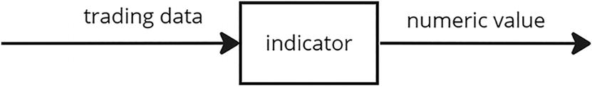
A block diagram of the indicator module that takes the trading data and gives the numeric value.
Figure 3-1
Indicator entity
-
Architect: Fine. What do you mean by conditions? What is their purpose?
-
Customer: This is a set of conditions taking indicators, processing their values, and giving a signal whether it’s time to enter or exit a position or maybe neither.
-
Architect: Do I understand correctly that, in fact, the purpose of a set of conditions is simply to return a yes or no value to us when passing trading data such as candles or the order book as input?
-
Customer: Yes, that’s right.
-
Architect: Could this set of conditions be different for giving a signal to open and close a position?
-
Customer: Yes, maybe.
-
Architect: But in fact, are they the same thing? Are the parameters or formulas just different?
-
Customer: Yes that’s right.
-
Architect: Do you mind if we call the set of these conditions “Signal” and continue to operate with this concept?
-
Customer: Yes, I like it.
Here we have another entity: Signal. Its purpose is to give a yes/no answer in response to changes in trading data. To do this, the signal operates on indicator values. See Figure 3-2.
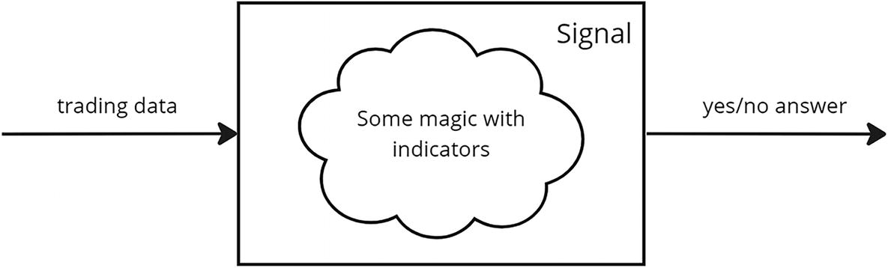
The block diagram of the signal module with indicators. It takes the trading data and gives the yes or no as an answer.
Figure 3-2
Signal entity
First View of the Process
The conversation continues:
-
Architect: Great. Now let’s turn our attention to our strategies. It turns out that a strategy is an entity that combines signals about opening and closing a position. That’s all? How will the system understand how much money needs to be opened?
-
Customer: Understanding position size is also part of the strategy. There are different methods of money management. One of the most primitive is to open a position for a certain percentage of the remaining capital; more advanced ones look at the historical or test indicators of the strategy and, based on them, decide on the size of the position.
-
Architect: What about risk management? Will there be any protection in the case of unexpected market behavior?
-
Customer: Undoubtedly! We must protect ourselves from sudden price drops and also be able to take profits. Here, too, there are simple methods and more complex ones. You can simply place a Stop Loss and Take Profit order, you can use a slightly smarter system and use trailing orders, or you can make a hybrid system with a trailing order, an additional signal, and even a limit on the number of open positions. But this does not change the essence. Yes, we need something that will monitor the current state of positions and close them in case of something unexpected or the need to take profits.
At this stage, we have one of the central entities of our system: a strategy.
By strategy we understand that an entity combines the following:
-
Signal to open a position
-
Signal to close a position
-
Capital management method
-
Risk control method
The purpose of the strategy is to give a signal to open or close a position with the size of that position. The strategy also manages risks, namely, placing an order.
-
Architect: What about indicator parameters? For example, Bollinger Bands Width (BBW) has several parameters, and one of them is the number of standard deviations. Are these parameters included in the strategy? Anything else?
-
Customer: Yes, the specific values of these parameters are part of the strategy. Also, please keep in mind that some theories use indicator values not only of the last candles, but also of the previous ones. For example, this is a simple condition: the closing prices of the last three candles must be greater than their opening prices.
-
Architect: I understood about the use of indicator values not only of the last candles. But what about the theory? What is it, and how does it differ from strategy? Better yet, tell us the process of your manual search for a strategy.
-
Customer: First, I come up with or read a theory on forums or from other sources. A theory is an idea for a future strategy. It does not contain specific parameter values for indicators. The theory is a description of the conditions of the signals, that is, the logic by which the signals will process the indicator values.
-
For example:
-
We open a position when the closing price crosses the WMA from bottom to top. We close when the closing price crosses the WMA from top to bottom. This strategy will work only if there is a strong trend, which we will check using the ADX indicator; that is, it must be greater than a certain value.
-
We open a position when the closing price breaks the upper Bolinger band and trading volumes increase. Exit a position at Stop Loss or Take Profit.
-
Next I test my theory. I take several variations of indicator parameter values, choose a capital management method, and test these strategies on historical data. If I understand that there is something in this theory, then I look for the most stable and profitable strategy for my instrument based on it. And after that I start trading on it.
Here we have a new entity: Theory. It consists of signals for opening and closing a position without indicator parameters, and it is on its basis that strategies are generated. The strategy includes data from the theory and specific values of the parameters that are necessary for the functioning of its components. See Figure 3-3.
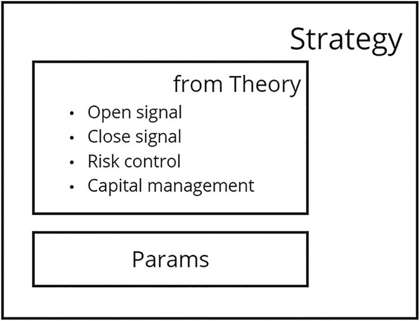
A cell defines the strategy from theory with its parameters. Open signal, close signal, risk control, and capital management.
Figure 3-3
Strategy entity
Now it becomes clear what the whole process will look like:
-
1.
The user creates theories in the system using a generator or independently.
-
1.
Based on some algorithm, the performance of the theory is checked.
-
1.
If, according to some criteria, the system understands that the theory is workable, then the process of searching for the optimal strategy begins.
-
1.
If a strategy is found that meets the user’s criteria, then it begins to participate in real trading. See Figure 3-4.
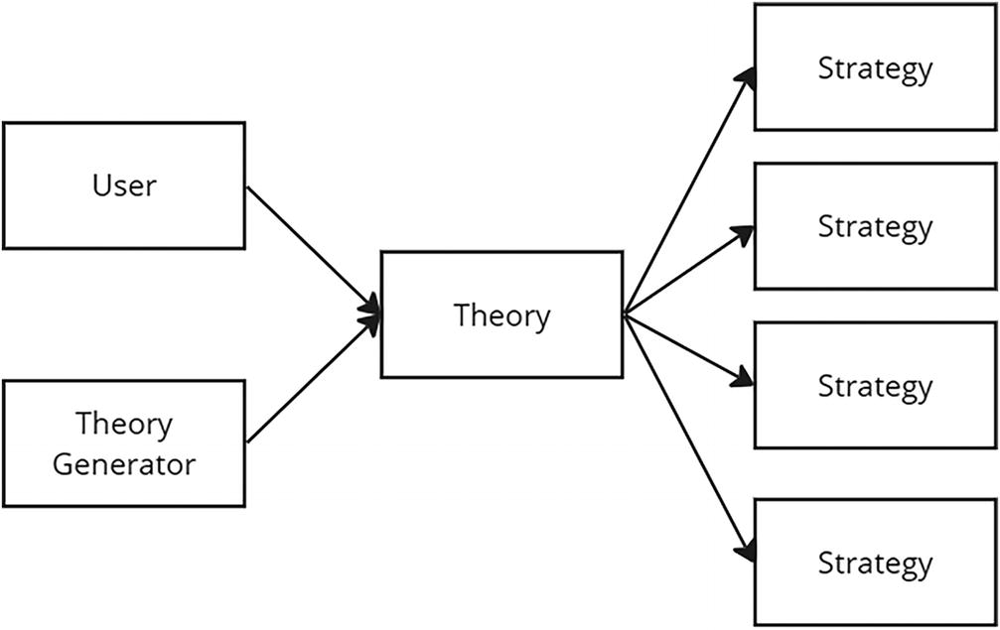
A flow diagram defines how the user and their generator inputs are fed via theory and gives multiple strategies.
Figure 3-4
First view of the process
Theory Generator
We have identified the main stages of the strategy life cycle, from the moment of theory generation to the moment of using the strategy in real trading. Now let’s look deeper and think about how each of these stages will work. The result of our discussions should be a complete understanding of the functionality of our system, as well as a list of tasks that need to be solved.
Let’s start with generating theories.
First, theories can be created in two modes by the user: manually or using a generator.
Here we have two requirements for the system:
-
It should provide the user with a tool for creating theories.
-
It must implement a mechanism for generating theories.
If everything is clear with the first requirement, we implement it using a special form on the front end, and we understand that a user can create dozens of theories manually. Then, with the requirement about the theory generation mechanism, we need to work and understand how this process occurs and what data it requires.
Obviously, to generate a theory, we need to generate signals. To understand how to do this, we need to delve deeper into this concept. So, we know that the signal includes a set of indicators and, receiving trading data as input, returns a yes/no response using them. But how does this magic of working with indicators happen?
Basically, the signals look like this:
If
- Indicator_1 > Indicator_2
AND
- Indicator_3 < Indicator_4 on the last three candles
we should buy.
For example, here’s the theory: the entry signal will be carried out by crossing the regression line (LRC) of the weighted moving average (WMA) from bottom to top and, accordingly, to the exit when LRC crosses the WMA from top to bottom. RSI is used as a confirmation factor for the transaction. That is, when we receive a crossover signal, we look to see if this candle or several previous ones have a corresponding RSI value. For example, if there is a buy signal, then the RSI value should be less than 30, and a sell signal should be greater than 70. We will also add an additional condition to the input for the width of the Bollinger Band (BBW). If this becomes more than 0.04, then check the value of the ADX indicator; it should be more than 30.
In my presentation, this theory looks like this:
Signal to open a position:
-
AND group:
-
LRC > WMA on the current candle
-
RSI < Const on the previous three candles
-
BBW > Const on the current candle
-
BBW on the previous candle < Const
-
ADX > Const
Signal to close a position:
-
AND group:
-
LRC < WMA on the current candle
-
RSI > Const on the previous three candles
Here we have the concept of condition and condition group. The condition contains left and right indicators and a comparison condition. Time intervals, candle intervals at which it is necessary to check the condition, become additional parameters in the strategy along with indicator parameters. The result of a condition being met is a yes/no response, but often we need to group these conditions.
For example, the following:
- Condition_1 AND (Condition_2 OR Condition_3)
can be expressed using groups like this:
-
Group_1 = Condition_2 OR Condition_3
-
Group_2 = Condition_1 AND Group_1
As a result, the root group of the signal will be Group_2. This is what will give us the long-awaited yes/no answer. See Figure 3-5.
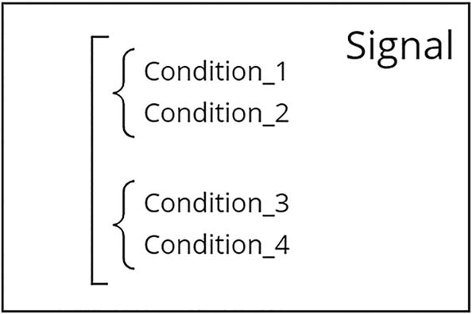
A signal block illustrates the sets of conditions 1 and 2 and conditions 3 and 4.
Figure 3-5
Conditions
Let’s return to the theory generator. Somehow it must generate signals. From the logic of signal construction, it is clear that the number of combinations of conditions and their groupings can be infinite. This means we need to somehow limit this amount. I propose to do this by using signal templates, which will initially have condition layouts with groups, and the generator, substituting indicators in them, will create new signals.
It is worth noting here that this is not the only possible approach to creating signals. Conditions can also be created programmatically using the brute-force method with restrictions on possible options, for example, with a limit on the depth of nesting of groups and a number of conditions in each of them. Or you can use an optimization algorithm rather than a brute-force method, which will speed up the process of finding a profitable strategy.
Now imagine the beginning of the process of setting up the theory generator. The user first creates signal templates and then selects indicators. The generator, using the selected signal templates and substituting different combinations of indicators into them, will generate new signals.
At this stage, I will remind you what the theory consists of. These are signals for opening and closing a position, a capital management method, and a risk control method. We have closed the question of how signals will be generated, so now let’s think about what to do with capital and risk management methods. In fact, there is nothing to invent here. We have a list of these methods, which is not large, so the user can simply specify a list of these methods when setting up the generator, and the generator will create theories where it will try each of them.
Strategies Searching
Theories are generated or created manually by the user. But one of the key requirements for our system is the search for profitable strategies and not the generation of theories. But how to look for them? And what does “searching for profitable strategies” even mean? The search process includes two important concepts: the search method and the criterion by which we understand that the search process is completed. We have a theory. We need to understand how to search for profitable strategies based on it and how we will carry out this search.
One-Step Approach
Let’s start with the parameters that distinguish theory from strategy. They include indicator parameters and condition parameters, such as the depth of the candles at which the check takes place and time intervals. This means that to find a profitable strategy, we need to generate strategies by varying these parameters.
First, you need to understand that these parameters are limited. The depth of candles must clearly be greater than 0; for example, perhaps it cannot be greater than 50 and must always be an integer. And time intervals are generally limited to a finite list of values: 1 minute, 2 minutes, 3 minutes, 5 minutes, 10 minutes, 15 minutes, 30 minutes, 1 hour, 4 hours, 1 day, 1 week, 1 month, and 1 year. These restrictions greatly simplify our task, but there can be many parameters, and therefore there can be many possible variations of strategies.
For example, let’s collect all the parameters and restrictions for the strategy we looked at earlier. For convenience, I have indexed the conditions and groups to make it easier to navigate their parameters.
Here’s a signal to open a position:
-
GROUP_1 AND group:
-
CONDITION_1 LRC > WMA on the current candle
-
CONDITION_2 RSI < Const on the previous three candles
-
CONDITION_3 BBW > Const on the current candle
-
CONDITION_4 BBW on the previous candle < Const
-
CONDITION_5 ADX > Const
Here’s a signal to close a position:
-
GROUP_1 AND group:
-
CONDITION_1 LRC < WMA on the current candle
-
CONDITION_2 RSI > Const on the previous three candles
What parameters does the LRC indicator from GROUP_1 CONDITION_1 signal for opening a position (SIGNAL_1) have?
First, we need to take into account the parameter of the LookbackPeriod indicator itself, which is how many candles this indicator will be calculated on. Second, we need to understand at what time interval (TimeInterval) this indicator will work. Third, what candle depth (CandlesDeep) will the signal use to calculate conditions? As a result, we get that the first INDICATOR_1 (LRC) from GROUP_1 CONDITION_1 and SIGNAL_1 has the following parameters:
GROUP_1
CONDITION_1
INDICATOR_1
LookbackPeriod
TimeInterval
CandlesDeep
Remember when we talked about parameter limitations? Let's add them to our parameters:
GROUP_1
CONDITION_1
INDICATOR_1
LookbackPeriod from 2 to 300 step 1
TimeInterval limited to list of 12 values
CandlesDeep from 0 to 0 step 1
We can calculate how many strategy variations INDICATOR_1 from CONDITION_1 of the group GROUP_1 will cost us.
LookbackPeriod (300 - 2 + 1) * 1 = 299
TimeInterval 12
CandlesDeep 1
Total 299 * 12 * 1 = 3588
Now let’s do the same calculations with the remaining signal indicators for opening a position, SIGNAL_1.
GROUP_1
CONDITION_1
INDICATOR_1 (LRC)
LookbackPeriod from 2 to 300 step 1
TimeInterval limited to list of 12 values
CandlesDeep from 0 to 0 step 1
INDICATOR_2 (WMA)
LookbackPeriod from 2 to 300 step 1
TimeInterval limited to list of 12 values
CandlesDeep from 0 to 0 step 1
CONDITION_2
INDICATOR_1 (RSI)
LookbackPeriod from 2 to 300 step 1
TimeInterval limited to list of 12 values
CandlesDeep from 0 to 10 step 1
INDICATOR_2 (Const)
Value from 0 to 100 step 0.1
CONDITION_3
INDICATOR_1 (BBW)
LookbackPeriod from 2 to 300 step 1
StandardDeviations from 1 to 20 step 1
TimeInterval limited to list of 12 values
CandlesDeep from 0 to 0 step 1
INDICATOR_2 (Const)
Value from 0 to 0.6 step 0.001
CONDITION_4
INDICATOR_1 (BBW)
LookbackPeriod from 2 to 300 step 1
StandardDeviations from 1 to 20 step 1
TimeInterval limited to list of 12 values
CandlesDeep from 0 to 10 step 1
INDICATOR_2 (Const)
Value from 0 to 0.6 step 0.001
CONDITION_5
INDICATOR_1 (ADX)
LookbackPeriod from 2 to 300 step 1
TimeInterval limited to list of 12 values
CandlesDeep from 0 to 0 step 1
INDICATOR_2 (Const)
Value from 0 to 100 step 0.1
If we count all the possible variations of strategies, we get the following:
SIGNAL_1=
CONDITION_1 (299 * 12 * 1 * 299 * 12 * 1)
* CONDITION_2 (299 * 12 * 10 * 1000)
* CONDITION_3 (299 * 20 * 12 * 1 * 600)
* CONDITION_4 (299 * 20 * 12 * 10 * 600)
* CONDITION_5 (299 * 12 * 1 * 1000)
\= 12,873,744 * 35,880,000 * 43,056,000 * 430,560,000 * 3,588,000
\= 3.072395344219699e+35.
This is the number of variations based only on the signal to open a position! This is an incredibly large number.
If we use even a very powerful server cluster and ignore the fact that working with such large numbers in any programming language is difficult, then it will still take millennia to run such a large number of strategies on historical data. For example, if our cluster calculates thousands of strategies per second, then it will take 9.742501725709345*1024 years to calculate all the options. This is completely unacceptable for us.
This means we need algorithms that are smarter than simply searching through all the possible options for parameters.
Simply distributing strategies evenly across the space of all possible options is not a bad idea, but it is not enough, because there may be a strategy with much more impressive results very close by. See Figure 3-6.
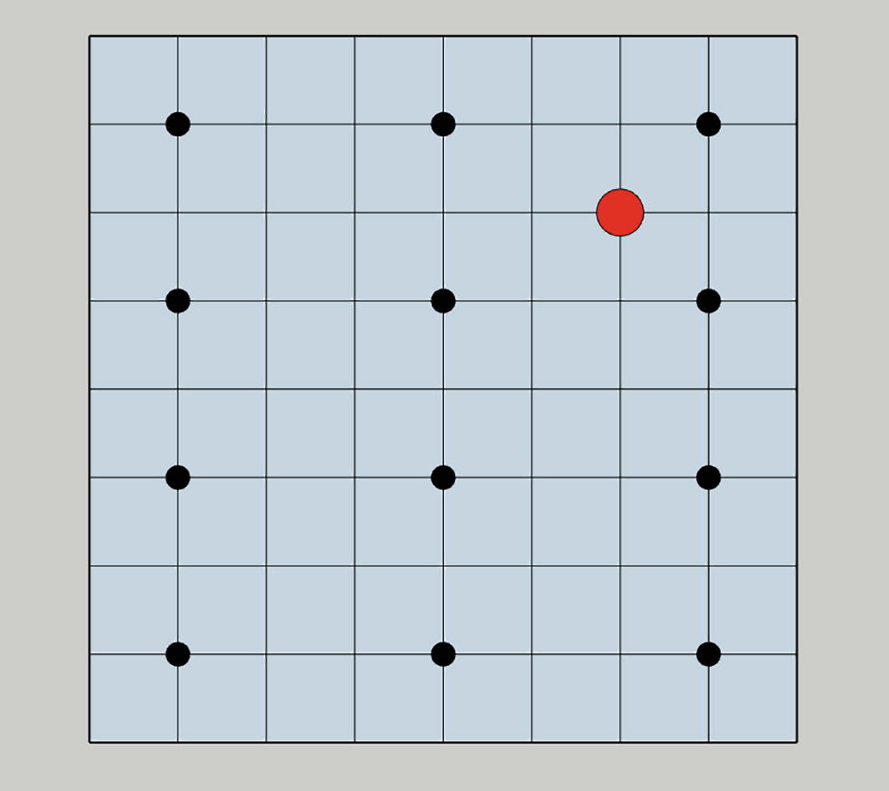
A grid with cells representing strategies is arranged in rows and columns. A highlighted node is at the top right.
Figure 3-6
Local extremes
Fortunately, we are not the only ones faced with the task of finding the optimal solution in a vast space of possible variations. There is a special section of engineering that deals with this problem, and we can take advantage of the results of the work of a large number of scientists who have devoted many years to this branch of science. Optimization algorithms are the central part of this area. We’ll talk about them in more detail in Chapter 6, but for now it’s important to understand the general logic of how they work.
The task of optimization algorithms is to maximize the value of a function by selecting its parameters.
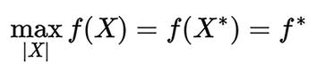
An equation. Max with the modulus of X, f of X = f of X asterisk = f asterisk.
In this formula,
X is a vector of our variable parameters, in other words, a set of values for the strategy parameters.
|X| is the set of permissible parameter values and is precisely the restrictions imposed on our parameters.
f is the objective function or optimization criterion. In relation to a strategy, this criterion may be equal, for example, to the average monthly profitability of the strategy. It is usually calculated using the formula (ending balance – opening balance) / opening balance. In other words, this is how much percent of the initial capital the strategy earned.
X* is a vector of variable values at which the objective function reaches its optimal, in our case maximum, value. These are just the specific values of the constant LookbackPeriod or TimeInterval for each indicator.
f* is the optimal value of the objective function.
It is also worth noting that most modern optimization algorithms have not been proven to have absolute convergence. This means they have not been proven to find the most optimal result, but they do find a fairly good value of the objective function in a more acceptable time than millennia.
The following algorithm for finding the optimal strategy is obtained as shown here:
-
1.
We pass a set of parameters with their constraints to the optimization algorithm. In response to this, they generate for us sets of parameter values, based on which we can create a strategy. That is, the algorithm will give us what the LookbackPeriod should be equal to, for example, for a specific opening signal indicator.
-
1.
Our system simulates real trading with this strategy using historical data and, based on the results, calculates the optimization criterion for each set of parameters.
-
1.
Again, we go to step 1; that is, we transfer the sets of parameters with the calculated criterion for each of them again to the optimization algorithm and, based on this data, it again generates a set of values for us. This loop continues until the stopping condition occurs. Such a condition can be the number of iterations or the fact that we have gone through all possible variations, or, for example, search degradation. This is when new sets of values don’t differ very much from each other. See Figure 3-7.
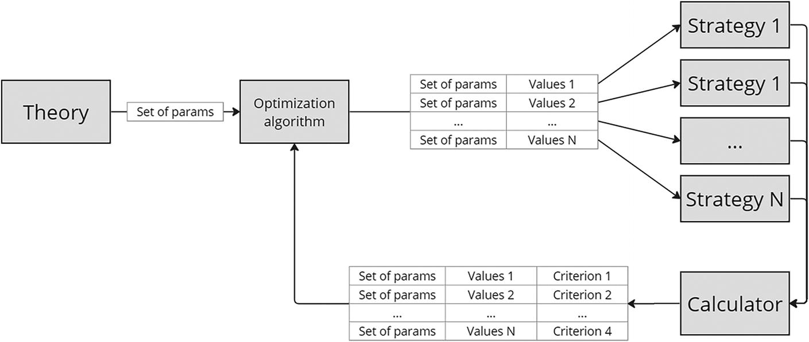
A flow diagram depicts how the theory undergoes an optimization algorithm to give N number of strategies. The strategies are calculated and aligned into parameters, values, and criterions and feedback is given to the optimization algorithm.
Figure 3-7
One-step process
Two-Step Approach
I showed how to implement a one-step system to search for a strategy, but I was not impressed with the results of its work. The fact is that optimization algorithms are evaluated by two criteria: the accuracy of determining the optimal value and the coverage of all possible variations of parameters in their space. In practice, this means that if the algorithm is more tuned to coverage, then it will not find the most optimal solution, but the options that it will consider will be as varied as possible. And in the case of a bias toward optimization, the algorithm will find an extremum, but with a high degree of probability it will be local and not global.
So, I tried different optimization algorithms with a wide variation in their settings and was disappointed every time. Breadth-tuned algorithms did not find the best strategies because they did not include a local search algorithm, and the value space can be huge. Algorithms tuned in depth accurately found local maxima but often missed global ones. Also, the calculations took a long time and often had negative results when the theory turned out to be unviable.
As a result, I decided to complicate my system for finding profitable strategies. First, I wanted to quickly cut off bad theories; for this I used an algorithm configured in breadth and increased the step of parameter values. That is, for example, at the first step for GROUP_1 CONDITION_1 INDICATOR_1, I passed the following to the algorithm:
GROUP_1
CONDITION_1
INDICATOR_1
LookbackPeriod from 2 to 300 step 10
TimeInterval limited to list of 12 values
CandlesDeep from 0 to 0 step 1
I increased the step for LookbackPeriod by 10 times, which automatically reduced the number of variations by the same value.
An urgent question arose in the automatic determination of viable theories. I didn’t like the strategy of simply selecting the best strategies sorted by the value of the optimization criterion, because the sample, for example, included strategies with 10 trades over five years or with a large number of losing positions and only a few, but large, winning ones. I consider such strategies unstable and do not work with them. Our task is to look for stable, albeit not very profitable, strategies.
Therefore, I came up with and developed another essence of my system, the quality condition. Its task is to analyze the calculated strategies and give a yes/no answer, that is, whether our theory is suitable for further research or not. Obviously, there is no point in analyzing all strategies, since they are already ranked according to the optimality criterion. This means that in the suitability condition it is necessary to specify a certain number or percentage of strategies that we are ready to consider. Next, we need to indicate the selection conditions by which the strategy can be classified as suitable. If at least one of the pool of strategies turns out to be suitable, then the entire theory is considered suitable, and we will continue to work with it. See Figure 3-8.
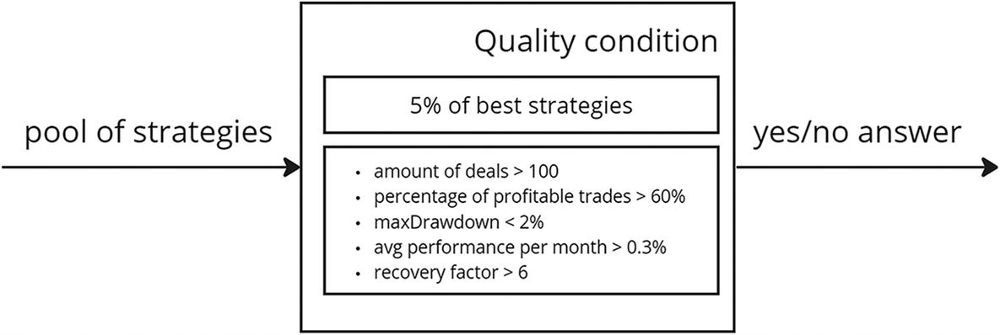
The quality condition block intakes the pool of strategies and gives a yes or no answer. The quality condition calculates the number of deals, percentage of profitable trades, max drawdown, average performance per month, and recovery factor.
Figure 3-8
Quality condition entity
It is worth noting here that all these conditions can be included in the optimization criterion. For example, if maxDrawdown becomes more than 2%, then make it negative, and then the optimization algorithm will stop considering this strategy to generate the next set of variable values. However, I refused this because such strategies may be promising, but they just need to be optimized, which means they cannot be discarded from the field of view of the optimization algorithm.
Since in our sequence of searching for a profitable strategy, another operation appeared to vary the intervals and steps of parameters, there was also a need for another entity that contains data on these changes. I called it SubTheory. While the theory contains settings on the basis of which we will search for strategies, SubTheory will contain a specific optimization algorithm, rules for generating and calculating strategies. It is also obvious that SubTheories are generated based on theory. See Figure 3-9.
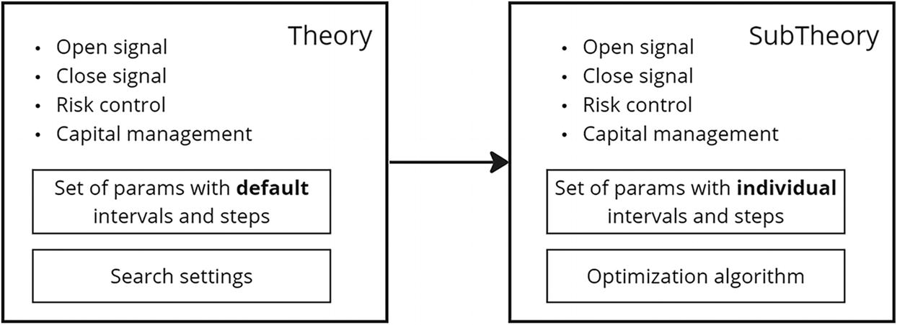
A diagram defines the flow of theory into sub-theory. Both the theory and sub-theory include open signal, close signal, risk control, and capital management. Theory performs a set of parameters with default intervals, while sub-theory performs individual intervals and steps.
Figure 3-9
SubTheory entity
Based on theories, a set of SubTheory will be formed. And each SubTheory will generate strategies. That is, strategies are not built on the basis of theory. To test the theory, we created one SubTheory. See Figure 3-10.
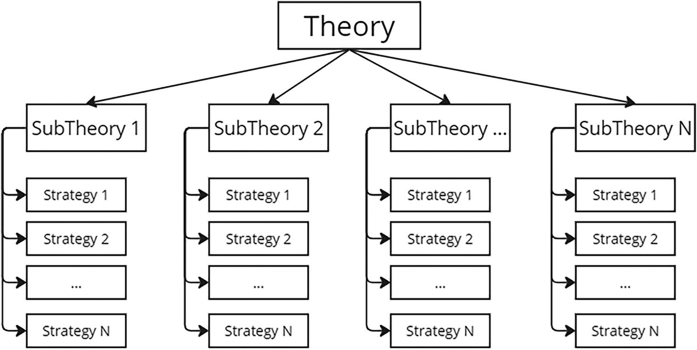
A tree diagram lists the theories. It comprises N number of sub-theories. Each sub-theory has N number of strategies.
Figure 3-10
Relationship between Theory and SubTheories
Let’s assume that one of our theories turns out to be suitable. That is, with a high degree of probability, one or even several good strategies can be obtained from our theory. All that remains is to find them. When determining suitability, we reduced the number of variations by increasing the parameter step. When searching for a profitable strategy, this approach will not suit us, because our task is to find the most optimal strategy possible and not one close to it. This means that the search accuracy should be as high as possible, and therefore the parameter step should be minimal. But let me remind you that in practice I realized that this approach does not work. Therefore, I decided to act iteratively. That is, reduce the step gradually while simultaneously narrowing the ranges of parameter values. In practice, this means that at each search step a new SubTheory will be created. Now the strategy search scheme looks like Figure 3-11 and Figure 3-12.
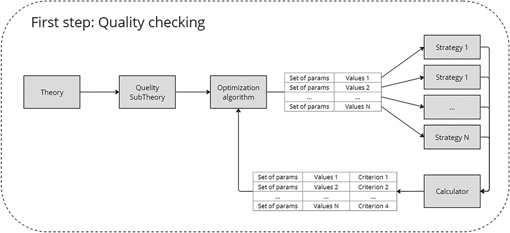
A block diagram defines the first step. The theory undergoes quality sub-theory and an optimization algorithm to give N number of strategies. The strategies are calculated and feedbacked to the optimization algorithm with a set of parameters, values, and criteria.
Figure 3-11
First step
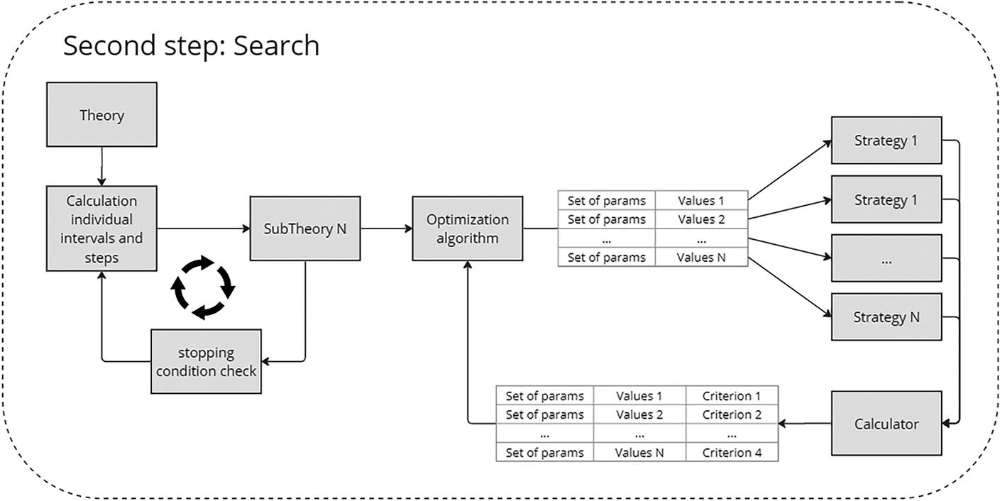
A block diagram defines the second step. Individual intervals and steps are calculated from the theory and derived as sub-theory, which is feedback to the calculated intervals with a stopping condition check. The sub-theory undergoes an optimization algorithm to give N number of strategies.
Figure 3-12
Second step
Let’s look at the second step in more detail.
To simplify, let’s imagine that our theory is characterized by only two parameters (Table 3-1).
Table 3-1
Set of Params with Default Intervals and Steps
Param
from
to
step
LookbackPeriod
1
300
1
Value
1
100
0.1
It is easy to calculate that this theory can have 300,000 strategies. This is not an impressive number that can simply be sorted out, but let me remind you that this is a simplified example and in real theories this number will be approximately 3.072395344219699* 1035.
So let’s get started. Before creating SubTheory, we need to decide on the step and interval of each parameter. For the first time, we will take the default intervals from theory and increase the step so that the number of parameter values is limited by the user settings. For example, let’s take 20. We get the set shown in Table 3-2.
Table 3-2
Set of Params with Individual Intervals and Steps
Param
from
to
step
LookbackPeriod
1
300
300/20 = 15
Value
1
100
100/20 = 5
So, the first SubTheory has been created. Let’s imagine that 20 strategies were generated and calculated on its basis. I understand that this number is lower than the number of all variations of strategies that can be generated based on this SubTheory, but I remind you that the optimization algorithm is not a brute-force method. The goal of these algorithms is to find the maximum value of the objective function in the least number of calculations.
Now, based on the results of these 20 strategies, you need to generate custom intervals and steps for the next SubTheory. The logic for defining the steps is clear, but what about the intervals? How to reduce them? Let’s look at the LookbackPeriod parameter as an example. Let’s take the values of this parameter from the five best strategies of this SubTheory. How many strategies do we take? And what rule (percentage or quantity) should be specified by the user at the stage of theory formation in the Search settings block? See Table 3-3.
Table 3-3
Calculated Strategies
Strategy
Value of LookbackPeriod
Strategy 1
91
Strategy 2
16
Strategy 3
196
Strategy 4
166
Strategy 5
16
From these values it is clear that the optimal value is in the interval 16 - 196. But since this is not the final solution, we will add one step in each direction. As a result, we will get an interval from 1 to 211. Next we need to reduce the step. And again we take 20 intervals. The step will then be equal to 211/20 = 10.55, but we know that the minimum possible step for this parameter is 1, which means it is necessary to round 10.55 to units. As a result, we get 11. We do the same with the second parameter.
This strategy for calculating new intervals and steps is not the only one. Better solutions can be devised, such as exploring multiple subintervals to more accurately probe these local extrema. You can also change the step size depending on the number of our iteration and/or the total number of strategies. Here I showed an example of the simplest implementation.
Now we need to discuss the conditions for exiting this cycle. I’m using a double condition. The first is the number of iterations. But it happens that the intervals narrow so much that the system has the opportunity to go through all possible strategy options in an acceptable time. Therefore, I also set the number of strategies after which the system could switch to the brute-force method. And after searching through all possible values, it stopped.
Selection and Forward Testing
The second step is complete, so now we’ll select strategies for forward testing. I acted according to the following logic: I set the number of strategies I needed and the condition of suitability. My system followed a list of strategies sorted in descending order of the value of the optimization criterion; if any of them fulfilled the suitability condition, then the system allowed it to proceed to the next step. This should continue until either the required number of strategies is collected or the pool, the settings of which are specified in the suitability criteria, is exhausted.
We now need to test suitable strategies on stocks that were not included in the search process. This is necessary to make sure that the chosen strategies are truly profitable and not tailored to specific stocks. This test will also give us information about the operation of strategies, which can be applied in real trading in the risk control module. What is forward testing in relation to our system? This is simply modeling the operation of a strategy based on historical data and preselected instruments. Next, all results are checked according to the suitability condition, and if they all meet the condition, then the strategy is considered profitable and can be used in real trading. See Figure 3-13.
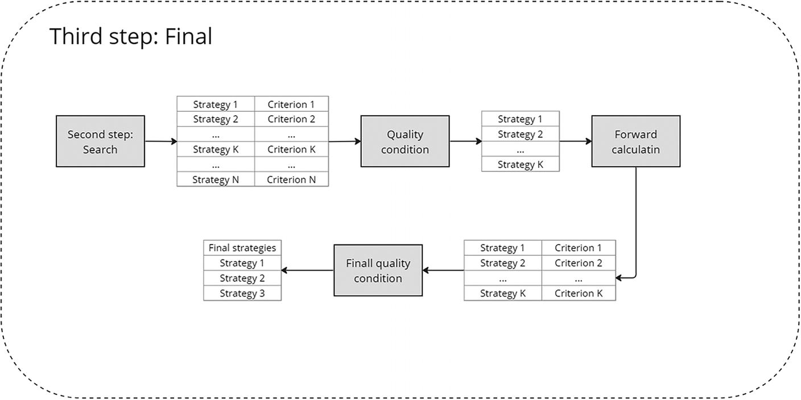
A block diagram defines the third step. The output from the second step is processed for quality conditions, forward calculation, and final quality condition.
Figure 3-13
Third step
Selection of Financial Instruments
At this stage we have profitable strategies. But on what instruments are they profitable? On what instruments can they be used in real trading? There are many possible solutions to this issue. First, we need to divide all the tools we use by type. In the simplest sense, this is a division by price ranges and trading volumes. This division is necessary due to the widely used indicator theories based on price or trading volume.
This is not the only way to choose an instrument for real trading. There are many more options; for example, you can divide charts by type, highly volatile, trend, flat, and so on. Of course, to make the user’s work easier, you can automate the creation of historical data with the automatic distribution of price charts into groups.
We all understand that the market situation can change, and this means that the instruments can change the group. So, we need to take care of two more things. First, we need to think about the distribution of instruments or the segments of their price charts into groups when connecting a new instrument. Second, we need to take care of a real-time monitoring system that will turn on or off strategies on instruments when the market situation changes.
So, charts or instruments are divided into types, which means that the system must check, search, conduct forward analysis, and conduct real trading on instruments of the same type. This is important, because a profitable strategy will cease to be profitable in completely new conditions. This approach looks like tweaking a strategy, but it’s not at all because the types of tools can be broad rather than limited to one or two instances. Of course, if you set the conditions for a group that only one or two instruments fall under, then yes, this will be an adjustment. In this matter, it is important to maintain a balance between the breadth of coverage of tools or types of charts and understanding the specifics of how each of your theories works.
Setting Up a Search for a Profitable Strategy
In the previous steps, we talked a lot about the fact that the user must set some parameters to generate theories and find profitable strategies. Let’s collect all this information in one place.
Obviously, the entire search process is governed by theory, which means that search settings should be stored in it. And since the theory can be created not only manually, the user must select these settings in the generator.
Also, the search settings should contain all the necessary information about the search parameters in all three steps and include a list of tools or segments of historical data on which strategy indicators will be calculated (see Figure 3-14 and Figure 3-15).
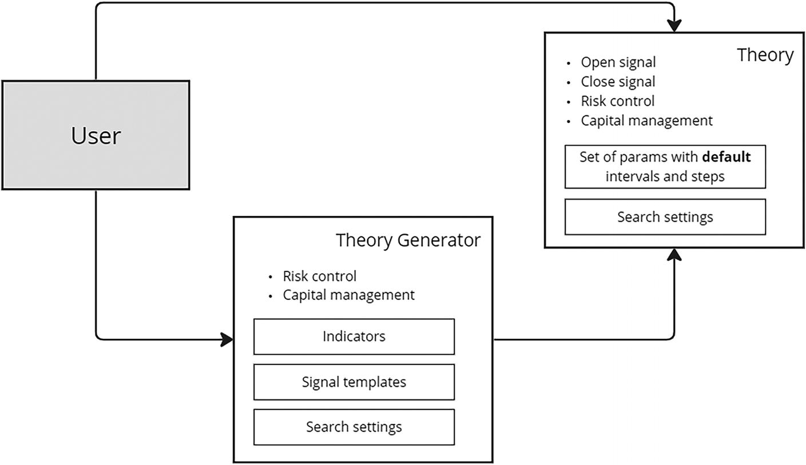
A diagram defines how the user sends the data to the theory and theory generator. The theory includes open signal, close signal, risk control, and capital management. The theory generator comprises risk control and capital management with indicators, signal templates, and search settings.
Figure 3-14
Theory generation process
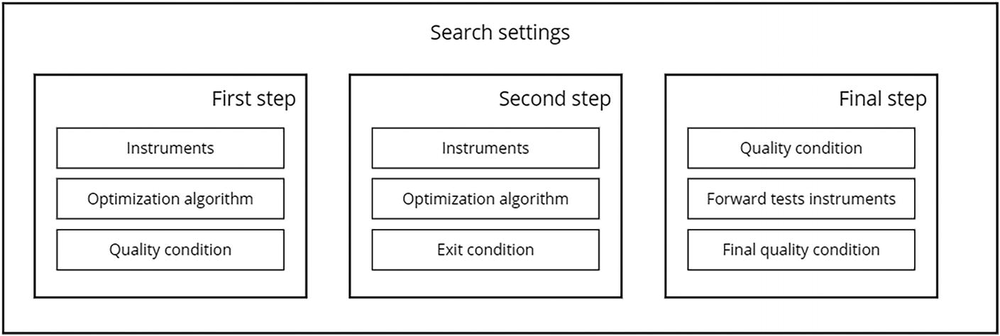
A block diagram of the search settings block lists its steps. The first and second steps include instruments and optimization algorithms. The first step performs quality conditions, while the second step performs exit conditions. The final step comprises quality conditions, forward test instruments, and final quality conditions.
Figure 3-15
Search settings at every step
The Logic of Searching for Profitable Strategies
Let’s summarize and describe the general vision of the algorithm for finding profitable strategies:
-
1.
The user creates a theory manually or using a theory generator. The user must make all the necessary settings to find a profitable setup, as well as signal templates and a list of indicators to generate strategies.
-
1.
An initial check of the quality of the theory is carried out on a reduced field of possible parameter values using an optimization algorithm configured to cover a wide range of possible parameter values.
-
1.
If the previous step is completed successfully and the theory is considered to be of high quality, then the optimal strategy is searched by iteratively narrowing the possible options for parameters with a gradual increase in their accuracy.
-
1.
The required number of strategies is selected from the entire pool of counted strategies in step 3 using the quality criterion specified in the search settings.
-
1.
Selected strategies undergo forward testing. Using the final quality condition, the required number of final strategies that are suitable for real trading are selected from them.
Real Trading
At the previous step, several promising strategies were found that performed well in forward testing. We also know what types of instruments or chart types each of these strategies can use.
This means that in a real trading system there should always be a robot running that monitors all available instruments and in real time determines their type or the type of their charts. As I said earlier, there are many options. To keep things simple, I will use tool types in this book. For example, if a tool has increased in price from $15 to $50, then the robot must record this and change its type.
Another robot is also needed that constantly checks the strategies and types of tools. If one of the tools has changed its type, then you need to turn off the strategies that no longer correspond to it. Here it is necessary to pay special attention to the mechanism for disconnecting the strategy from the tool. Imagine a situation where a tool changes its type frequently. So, should the system constantly turn the strategy on and off? No, of course, this problem can be approached from two sides. First, correctly configure the definition of the tool type so that it has a reserve and the change of these types does not occur frequently. Second, do not turn off the strategy immediately, but wait for a certain time.
Also, this robot must include strategies on tools of the appropriate type. For example, if the tool has changed type or a new strategy has appeared, then it needs to be put into operation.
Our system works with money, which means that an external, additional audit of the strategy’s operation is necessary. In practice, this means that not only the strategy itself, with the help of risk control, will monitor its work, but also an external robot will monitor its performance and, in case of any discrepancies, turn off the strategy. For example, if the balance of a strategy has dropped sharply, or vice versa, if the strategy has earned an amount of money that is not standard for it, then this robot should turn it off.
In real work, system stability is extremely important. This means we must have prepared scenarios for actions in case of unforeseen circumstances—a sudden shutdown of the exchange for some time, a planned system update when we are forced to stop all or part of the strategies, an unplanned lack of electricity or Internet.
It is necessary to understand that this system will trade on more than one exchange using dozens of instruments. This will be a large, full-scale program, integrated with dozens of exchanges, using hundreds of tools and thousands of strategies. This point will be critical at the design stage.
Important Questions
Previously, we defined the main essence of our future system and also described the main processes associated with the search and operation of profitable strategies. But there are still some points that should be examined in more detail.
Life Cycle of a Position
Each profitable strategy contains signals for opening and closing a position. But what is the position? What are its stages of existence?
First, I want to separate the concept of a position from the concept of a system (internal) order and an order placed directly at the broker. Let’s start with the latter. This is exactly the order on the basis of which deals are executed and the broker notifies us about the change in status.
Many brokers provide functionality for placing not only market and limit orders but also such interesting types as stop loss or take profit, etc. But it is important to understand that not all brokers support all types of orders; therefore, we must implement them in our system. This is where the concept of a system order originates. This is the essence of our system, which “monitors” the state of the market, and if specific conditions are met, then it creates an order with the broker and monitors its execution (see Figure 3-16).
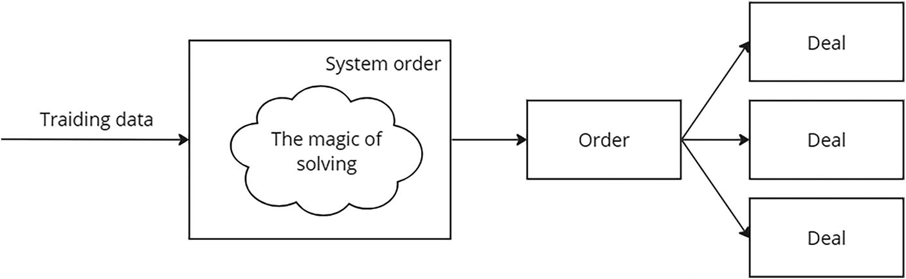
A flow diagram defines how the tracking data is fed to the system order that does solving. The solved output processes the order into multiple deals.
Figure 3-16
System order process
Position is one of the central entities of the system. It is this entity that initiates the creation of system orders. Each position can generate several system orders.
For example, one of the ways to control risk is to place take profit and stop loss orders. This means that when opening a position, we need to create three system orders: buy, take profit, and stop loss. However, not every one of them will generate an exchange order. See Figure 3-17.
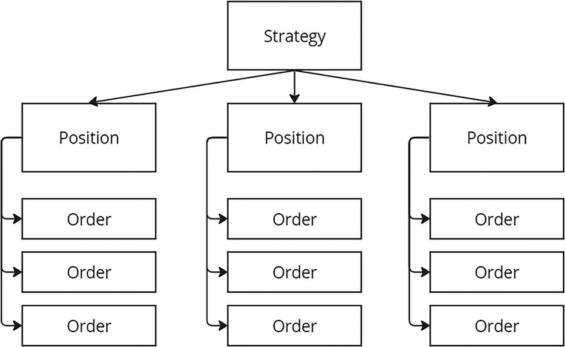
A tree diagram defines the strategy positions based on orders. Each position has multiple orders.
Figure 3-17
Relationship between strategy and orders
Let’s describe the life cycle of a position. Here I will introduce one of the simplest position management processes. But I do not exclude the possibility of much more complex options. So let’s get started.
A signal to open a position came from the strategy. This means we need to buy a certain amount of tools. We create a simple system buy order, which generates a market order.
Each order can have each of these statuses:
-
New: Initial status. This means that the broker has successfully registered your request in the system.
-
PartiallyFill: The order is partially filled. This is not the final status of the order; it only shows that one or more deals were made within the order, which do not cover the entire needs of the order.
-
Fill: Final order status. This means that the order was successfully executed.
-
Canceled: Final status. This status is set if you cancel your order yourself. It may come after PartiallyFill. It is normal when you cancel a partially filled order.
-
Rejected: Final status. This status is set if the broker cancels the order for any reason.
Executing an order at a broker is not a synchronous process. There is also a time delay due to the mechanics of receiving order statuses. We must provide the correct logic for the position to take into account all these nuances. For example, a situation may arise when a market order switches to the Rejected status immediately after it is created or when the system sends a request to create an order and the broker returns an error.
This means we must provide a position-processing mechanism in the platform that will allow us to correctly process all these situations.
Capital Management
In the previous chapter, I described several ways to manage capital. Each method has its own characteristics, advantages, and disadvantages. But all these methods have one thing in common: at the input they must receive data about the operation of the strategy, and at the output they must say the maximum amount for the purchase of an asset and set a strategy for purchasing additional assets. See Figure 3-18.
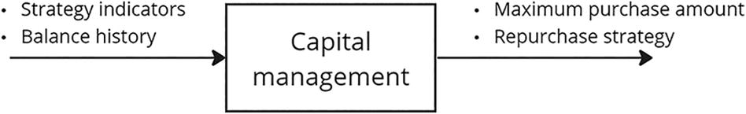
A block diagram depicts capital management block intake strategy indicators and balance history to give the maximum purchase amount and repurchase strategy.
Figure 3-18
Capital management entity
This means the system will refer to the capital management method every time the price of an asset changes to obtain information about the need to repurchase or partially sell the purchased asset. That is, the purpose of this block is to answer the question, is it necessary to buy or sell part of the assets and for what amount?
To focus on the main thing, implementing a system for the mass search for profitable strategies, we will implement in this book only one method of money management, but we will focus on creating a mechanism that will make it easy to add more complex methods to the system.
Our first method will be the fixed interest method. This is perhaps one of the easiest methods to implement, as it has only one variable and some elementary logic. It was discussed in detail in the previous chapter, but I will remind you what it is. It specifies the percentage of the balance on the basis of which the maximum purchase amount of the asset will be calculated when opening a position. It is also worth noting that with this method, only one buy order is created for one position; that is, there is no provision for the additional purchase of an asset into the position.
Risk Control
There are many approaches to managing your risks, all of which come down to one goal: to prevent the system from losing or gaining too much. I chose three options for myself that can easily be combined with each other. This is the creation of a take profit, stop loss, or trailing system order.
Take Profit and Stop Loss
This system order does not immediately create an order with the broker. And it sets it only if the closing price of the candle exceeds the price specified during creation. To simplify, I introduced a parameter equal to the percentage of discrepancy in the average price of transactions when executing a system order during the opening of a position. That is, if the price exceeds this percentage, then an order is placed with the broker.
For example, the strategy gave a signal to open a position. According to the logic of position processing, a simple market system order to buy an asset was first opened. During its execution, the deals in Table 3-4 were made.
Table 3-4
List of Deals
Count
price
total
10
45.4
454
2
45.3
90.6
As a result, we get the average purchase price equal to (454 + 90.6) / 12 = 45.38. If the strategy settings indicate that it is necessary to create a system take profit order with execution when the price exceeds the 4% threshold, then the system order will give a command to open an order with the broker when the closing price of the candle exceeds the threshold price equal to 45.38 * 104% = 47.2.
Stop loss system orders act exactly the opposite. They create an order with the broker if the closing price of a candle falls below a certain level. Regarding the example given earlier, if you set a threshold of 3%, then such a system order will command the broker to sell if the asset price falls below 45.38 * 97% = 44.01.
Trailing System Order
A trailing system order is a dynamically changing order designed to maximize profits. In this section, I will present my version of the idea of implementing this type of order.
The components of a trailing system order are three lines: decision border, profit border, and stop border. The stop border and profit border depend on the trailing price, the change of which is controlled by the decision border. As in the case of take profit and stop loss, if the closing price of the current candle is higher than the profit border or lower than the stop border, then the system initiates the procedure for closing the position, but there is a significant difference: in a trailing order, these borders are dynamic since the trailing price on which they depend may change.
When creating a system order, the trailing price is equal to the average price of asset purchase transactions. The decision border is a price that is higher than the trailing price by a certain percentage. If the current price is above the decision border, then a special trailing signal is checked. This signal analyzes the current state of the market and shows whether we should expect the asset price to continue moving in the direction we need. If the signal returns “yes,” then the trailing price becomes equal to the current one. This in turn entails a shift in the stop border and profit border prices. I have slightly modified the algorithm for determining the stop border and profit border. For me, they are not calculated using a simple formula that changes the price of the decision border by a certain, predetermined percentage. This formula also includes a factor for narrowing the acceptable price tunnel. When the stop border and profit border with each change the trailing prices become closer to each other. See Figure 3-19.
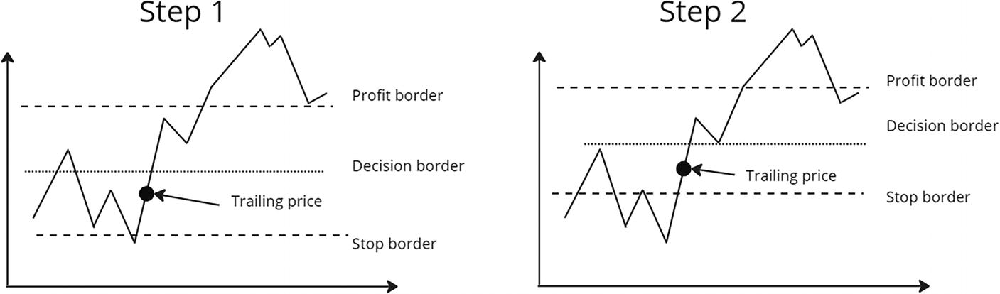
Two line graphs of steps 1 and 2. Both plots have an increasing trend with several ups and downs employed with the stop border, decision border, and profit border. In step 1, the trailing price is slightly below the decision border. In step 2, the trailing price is at the rising edge of the stop border.
Figure 3-19
An example of how trolling order works
Let’s look at the algorithm in more detail.
The following variables are necessary for a trailing system order to work:
-
TrailingPrice: The price relative to which the boundaries are located. When creating a trailing system order, the trailing price is equal to the average price of transactions when purchasing assets.
-
ProfitBorderCoeff: What percentage of TrailingPrice is the upper price border.
-
StopBorderCoeff: What percentage of TrailingPrice is the lower price border.
-
BorderChangeCoeff: What percentage the distance between the profit border and the stop border decreases by with each shift of the Trailing price.
-
DecisionCoeff: What percentage of TrailingPrice is the decision line located at.
-
DecisionSignal: The signal on the basis of which a decision is made to change the TrailingPrice.
-
DecisionCount: The number of changes TrailingPrice.
The algorithm for processing changes in the asset price will look like this:
-
1.
We check the penetration of the profit border. If we break through, then close the position.
-
1.
We check whether the stop border has been broken. If we break through, then close the position.
-
1.
We check the penetration of the decision border. If they hit, then we check the signal. If the signal returns “yes,” then TrailingPrice becomes equal to the current price of the asset.
For example, if the price of an asset changed as shown in Table 3-5.
Table 3-5
Change in the Price of a Financial Instrument
Date
Price
2021/10/01 11:00
97
2021/10/01 11:05
95
2021/10/01 11:10
105
2021/10/01 11:15
107
2021/10/01 11:20
107.5
And the variables in the strategy are equal to the values in Table 3-6.
Table 3-6
Strategy Parameter Values
ProfitBorderCoeff
0.1
StopBorderCoeff
0.05
BorderChangeCoeff
0.3
DecisionCoeff
0.02
TrailingPrice
90
DecisionCount
0
Then our algorithm will work as follows:
-
1.
2021/10/01 11:00 CurrentPrice = 97
-
a.
Checking the penetration of the profit border. To do this, you need to calculate ProtectedPrice, which is the profit border price.
ProtectedPrice = TrailingPrice * (1 + ProfitBorderCoeff * ((1 - BorderChangeCoeff ) pow DecisionCount)) = 90 * (1 + 0.1 * ((1 - 0.3) pow 0) = 90 * (1 + 0.1 * 1)= 99
The current price of 97 is less than the ProtectedPrice of 99. This means there is no need to close the position.
-
b.
Checking the penetration of the stop border. To do this, you need to calculate ProtectedPrice minus the stop border price.
ProtectedPrice = TrailingPrice * (1 - StopBorderCoeff * ((1 - BorderChangeCoeff ) pow DecisionCount)) = 90 * (1 - 0.05 * ((1 - 0.3) pow 0) = 90 * (1 - 0.05 * 1) = 85.5
The current price of 97 is more than the ProtectedPrice of 85.5. There is no need to close such a position.
-
c.
Checking the penetration of the decision border. To do this, let’s calculate DecisionPrice.
DecisionPrice = TrailingPrice * (1 + DecisionCoeff) = 90 * (1 + 0.02) = 91.8.
The current price of 97 is greater than the DecisionPrice of 91.8, which means we check the signal. For example, the signal gave the answer “yes.” It turns out that TrailingPrice becomes equal to 97, DecisionCount 1.
Results of the step: We do not close the position. TrailingPrice = 97, DecisionCount = 1.
-
-
1.
2021/10/01 11:05 CurrentPrice = 95
-
a.
Checking the penetration of the profit border.
ProtectedPrice = TrailingPrice * (1 + ProfitBorderCoeff * ((1 - BorderChangeCoeff ) pow DecisionCount)) = 97 * (1 + 0.1 * ((1 - 0.3) pow 1) = 97 * (1 + 0.1 * 0.7)= 103.79
The current price is 95 less than the ProtectedPrice of 103.79. This means there is no need to close the position. Please note that not only has the upper price limit changed from 103.79 to 99, but also the distance between the upper and lower limits has decreased.
-
b.
Checking the penetration of the stop border.
ProtectedPrice = TrailingPrice * (1 - StopBorderCoeff * ((1 - BorderChangeCoeff ) pow DecisionCount)) = 97 * (1 - 0.05 * ((1 - 0.3) pow 1) = 97 * (1 - 0.05 * 0.7) =93.65
The current price is 95 more than the ProtectedPrice of 93.65. This means there is no need to close the position.
-
c.
Checking the penetration of the decision border. To do this, let’s calculate DecisionPrice.
DecisionPrice = TrailingPrice * (1 + DecisionCoeff) = 97 * (1 + 0.02) = 98.94.
The current price 97 is greater than DecisionPrice 98.94, which means we check the signal. For example, the signal gave the answer “no.” It turns out that TrailingPrice does not change.
Results of the step: We do not close the position. TrailingPrice = 97, DecisionCount = 1
-
-
1.
2021/10/01 11:10 CurrentPrice = 105
-
a.
Checking the penetration of the profit border.
ProtectedPrice = TrailingPrice * (1 + ProfitBorderCoeff * ((1 - BorderChangeCoeff ) pow DecisionCount)) = 97 * (1 + 0.1 * ((1 - 0.3) pow 1) = 97 * (1 + 0.1 * 0.7)= 103.79. Obviously it has not changed since the previous step, because TrailingPrice has not changed
The current price is 105 more than the ProtectedPrice of 103.79. This means we give a signal to close the position.
Results of the step: Closing a position.
-
A trailing system order is a very powerful risk control mechanism because it changes its parameters depending on the market situation.
Scalability of Indicators
There is one big problem that I encountered almost immediately after the first attempt to implement this system: different scales of indicator charts that are compared in signals.
Imagine a situation where you need to compare ADX and the closing price of a candle, in some signal condition (see Figure 3-20).
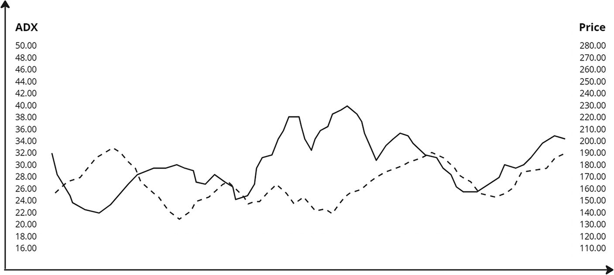
A multiline graph of A D X versus price. It plots two fluctuating trends with multiple barbs and plunges. At an A D X of 40.00, the maximum price observed is 230.00. Data are approximate.
Figure 3-20
Scalability of indicators
I propose solving this problem in a way that is standard for many trading platforms: scaling the indicators and bringing them to a single coordinate system. To do this, it is necessary to take the maximum and minimum values on the last segment of historical data for each indicator and equate them to 0 and 100%. As a result, each indicator value can be scaled from 0 to 100 using the following formula:
(currentValue - minValue) / ((maxValue - minValue) * 100)
It is worth noting here that as the strategy works, the values of minValue and maxValue should change as new data arrives. That is, the start of calculations will occur only after processing a given length of historical data.
Let’s look at an example. As a result of analyzing historical data, the maximum value of the indicator was 20, and the minimum was 9. See Table 3-7.
Table 3-7
Scaled Value Changes over Time
Date
Indicator Value
Maximum Value
Minimum Value
Scaled Value
2018/10/2 08:05
11
20
9
(11 - 9)/(20 - 9) * 100 = 18.18
2018/10/2 08:10
8
20
8
0
2018/10/2 08:15
25
25
8
100
2018/10/2 08:20
20
25
8
70.59
2018/10/2 08:25
27
27
8
100
2018/10/2 08:30
19
27
8
57.89
Thus, you can easily scale any indicator values to a single coordinate system and compare them with each other.
Summary
In this chapter, we went through the first stage of creating an architectural solution, namely, identifying requirements.
We identified the main entities of the system, as well as their relationships.
We decided to use optimization algorithms and also realized that the search for profitable strategies should be done in two stages.
We also discussed how our system should look in a production environment.
In the next chapter, we will pay more attention to the technical details. Let’s discuss what subsystems and services should be in our system, as well as how they should interact with each other.